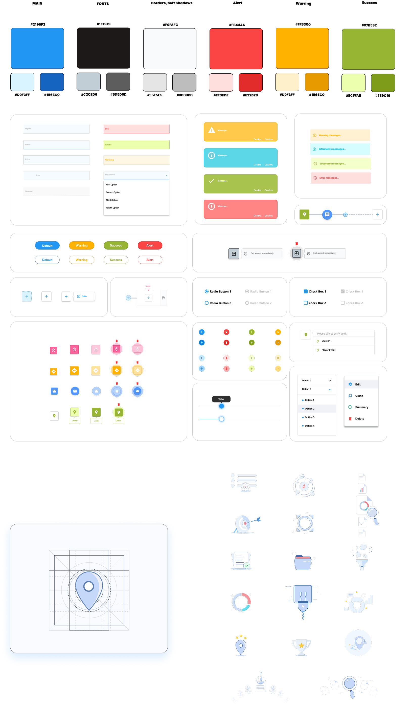
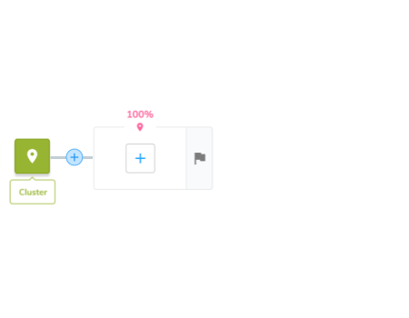
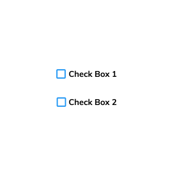
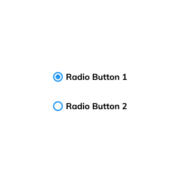
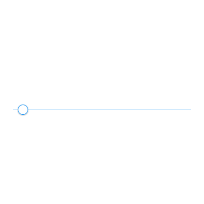

Case study · Product design
Player Journey
An intuitive, engaging and efficient interface for the player lifecycle.
As the Lead UI/UX Designer for Playtech's Player Journey CRM tool, my goal was to create an interface that maximises user engagement through real-time, automated and personalised interactions.
A key part of the project was a comprehensive design system that ensures consistency and scalability across every interface and multiple platforms, including Playtech's Campaign Manager, through a unified cross-platform graphical language.
The canvas
An infinite canvas to compose journeys
Marketers build a journey by dropping steps onto a canvas and wiring them together: SMS, email, bonuses and enhanced messages, branching on player behaviour. It replaced rigid form-based setup with something spatial, visual and easy to reason about.
Guided setup
A wizard that makes the hard parts feel easy
Each journey is configured through a clear, stepped flow: General, Goal, then KPIs. Plain language, sensible defaults and inline guidance let non-technical marketers set conversion targets without ever feeling lost.
Goals & milestones
Progress you can see, step by step
A time-based flow lays the journey out left to right, with goal milestones and a conversion rate on every step. Live participant and goal numbers turn the canvas into a dashboard the moment a journey goes live.
Architecture
Mapping every screen and state
Before pixels, the whole product was mapped as a flow: journey list, summary, setup steps, milestones and insights. The map kept design, product and engineering aligned on one shared picture.

End-to-end flow map of the Player Journey experience.
Design System
Style Guide
A unified, cross-platform graphical language: colour, type, components, iconography and motion, shared from Player Journey to Playtech's Campaign Manager.

UI micro animation



